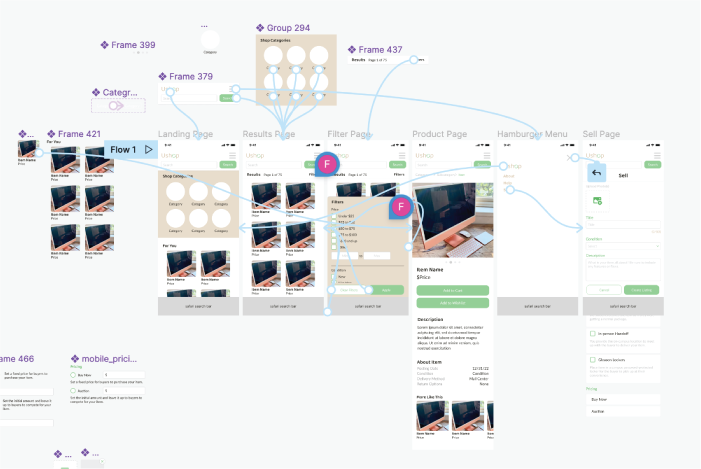

UShop is a campus-based platform that allows students to buy and sell used goods. It was created during the Covid-19 pandemic as a way to not only facilitate the exchange of goods among students but also foster a sense of community. Upon joining the UShop
team, I learned that the platform had already undergone a phase of usability testing and user research, resulting in the creation of many design components and website prototypes.
UShop Moodboard
Problem Statement
How can we increase the usability of UShop on all devices? How can we ensure a seamless user experience regardless of the device being used?
Users & Audience
Our target audience was students who were moving between housing situations and may have been looking to dispose of used goods or seeking affordable alternatives for necessary items.
Roles & Responsibilities
UShop is divided into various teams, and I was recruited to join the design team. The design team consisted of four members, two of whom focused on UX research, and the other two, including myself, concentrated on prototyping and design.
Scope & Constraints
We were on a tight deadline to complete our tasks in order to launch UShop by the upcoming semester.
Low Fidelity Prototyping
Left to right: Results Page, Landing Page, Sell Page Brainstorming, Sell Page
To begin the design process, we created wireframes for three key pages: the landing page, the results page, and the sell page. These wireframes were sketched out on an iPad notetaking app and made use of common themes in mobile websites to make the navigation
of our page as familiar and intuitive as possible.
High Fidelity Prototyping v1
High Fidelity WebsiteLeft to right: Landing Page, Product Page, Results Page, Filter Options, Sell Page
After creating the wireframes, we moved on to developing high fidelity prototypes in Figma. In this stage, our primary focus was on translating our paper ideas to the screen while maintaining the overall look and feel of our brand. This involved using
elements from our website mockups and adapting them to a mobile scale.
One of the challenges we faced was designing a highly intuitive sell page, as it was difficult to fit all of the necessary form elements onto a small mobile screen. The image above shows several iterations of our efforts to create minimal, easy-to-understand
checkboxes and buttons for use on the sell page.
High Fidelity Prototyping v2

Figma File
During our second iteration of high fidelity prototyping, we shifted our focus from strictly adhering to our website designs to creating a highly intuitive and easy-to-navigate mobile website. This required us to eliminate many of the design elements
we used from our website and instead invent new elements that would improve usability.
Left to right: Landing Page, Product Page, Results Page, Filtering Options, Sell Page, Menu
For example, we removed the carousel display on the landing page and replaced it with easy to find categories. We also increased the size of product images on the product page, removed the boxy card designs, and added scrollable images. Additionally,
we decluttered all pages by removing the category bar and created a hamburger menu to access the sell page.